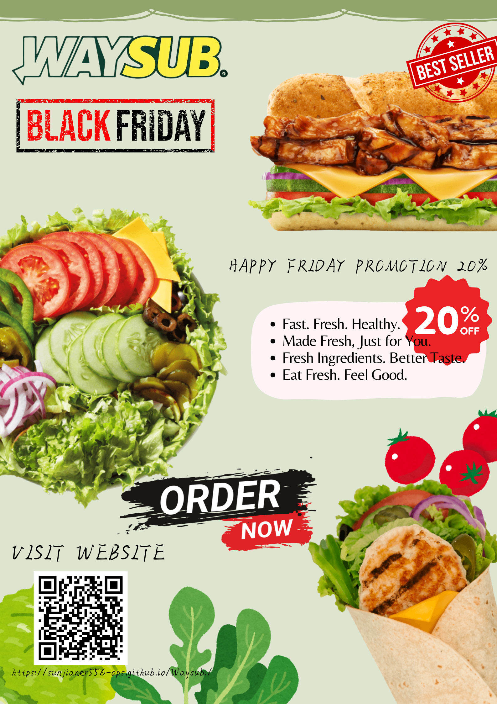

This poster is designed to introduce Waysub as a healthy fast-food restaurant that serves fresh and nutritious sandwiches for busy individuals. The poster highlights our brand concept, popular menu items, and healthy lifestyle message.
This poster advertisement is for educational purposes only.
This short video advertisement promotes Waysub’s healthy food concept. It showcases our fresh ingredients, and commitment to providing nutritious meals in a fast and convenient way.
This video advertisement is for educational purposes only.